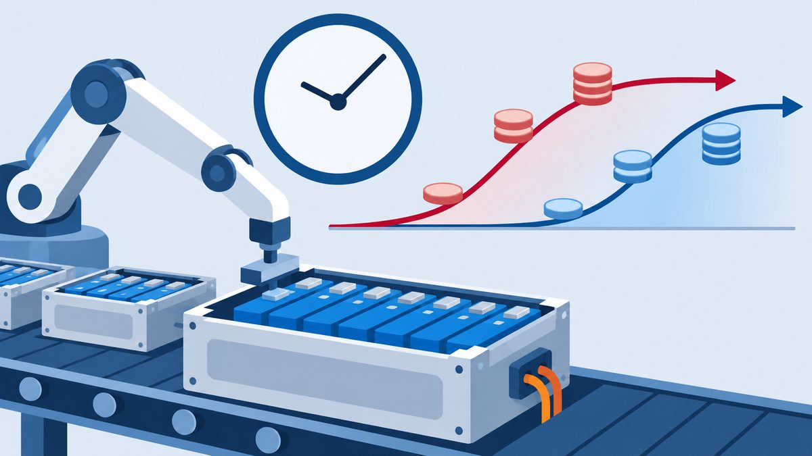

세방 ESS 모듈 양산, 매출과 비용의 시차

[AI 생성 일러스트] 기사 내용을 설명하는 도식이며 실제 사진이 아닙니다.
- 오하이오 모듈 공장 1·2라인 가동 시작
- LG에너지솔루션 수주 2028년까지 1조8000억원
- 내년 매출 전망이 이익으로 이어질지는 미확인
셀 공장 옆에서 모듈 생산 시작
11월 28일 디일렉 보도에 따르면 세방전지 자회사 세방리튬배터리가 미국 오하이오주 제퍼슨빌의 ESS 배터리 모듈 공장에서 생산을 확대하고 있다. 조립라인 3기 중 1·2라인이 가동에 들어갔고, 3라인은 장비 설치·준비를 마친 상태다. 연말까지 전체 라인을 운영한다는 계획으로, 3개 라인이 모두 가동 중인 단계와는 구분된다.
생산품은 LG에너지솔루션의 전력망용 ESS인 ‘JF2 링크’에 들어가는 배터리 모듈이다. ESS는 전력을 저장하는 설비이며, JF2 링크는 2세대 리튬인산철(LFP) 배터리 셀을 기반으로 한다. 세방리튬배터리는 LG에너지솔루션의 북미 ESS 사업에 생산 협력사로 참여한 뒤 반년여 만에 현지 양산을 확대하는 단계에 진입했다.
공장은 LG에너지솔루션과 혼다의 합작법인인 L-H 배터리 컴퍼니의 오하이오 공장 인근에 있다. L-H 배터리가 지난 7월 양산을 시작한 ESS용 LFP 셀을 공급하면 세방리튬배터리가 모듈로 조립해 LG에너지솔루션에 납품한다. 조립 장비는 하이비젼시스템이 제작했다.
셀과 완성 ESS 사이의 제조 공정
이번 사업에서 세방리튬배터리의 역할은 셀 생산 이후와 완성 ESS 이전에 놓인다. LG에너지솔루션은 모듈에 배터리관리시스템과 냉각장치 등을 결합해 팩을 구성한다. 이후 소방설비와 전력변환장치 등을 연결해 ESS 시스템을 만든다. 모듈 공장 가동은 이 제조 흐름의 한 단계를 담당하는 생산능력이 현지에 추가됐다는 의미다.
LG에너지솔루션은 전기차와 ESS용 모듈 생산 일부를 외부 협력사에 맡기고 있다. 피플웍스와 신성에스티, 이랜텍도 협력사로 거론된다. 배터리 사업의 확대가 셀 제조사 한 곳의 생산 증가로만 나타나는 것이 아니라, 모듈 조립과 장비 공급 등 여러 기업의 사업으로 연결되는 구조다.
다만 모듈 공급 확대를 완성 ESS 전체의 수익성 개선과 동일하게 볼 수는 없다. 세방리튬배터리는 조립 공정을 맡고, LG에너지솔루션은 후속 구성품을 결합해 시스템을 완성한다. 제공된 자료에는 세방리튬배터리의 모듈 납품 단가나 원가 구성, 미국 공장의 실제 가동률은 제시되지 않았다.
기존 사업 규모를 바꾸는 매출 전망
세방리튬배터리는 미국 공장 가동으로 올해 4분기 북미 ESS 사업에서 500억~700억원의 매출을 거둘 것으로 보도됐다. 올해 1~3분기 세방전지의 ESS 모듈 사업 매출은 84억원이었다. 같은 기간 연결 매출 1조5833억원에서 차지한 비중은 0.5%로, 기존에는 연결 실적에서 작은 사업이었다.
내년 북미 ESS 매출 전망은 8000억원이다. 미국 공장의 생산능력을 온전히 활용한다는 전제가 붙는다. 증권가가 추정한 내년 세방리튬배터리 전체 매출과 영업이익은 각각 1조1000억원, 200억원이다. 북미 ESS 매출 전망과 회사 전체 실적 추정은 대상이 다르며, 어느 쪽도 이미 실현된 실적은 아니다.
사업 확대의 근거가 되는 LG에너지솔루션 수주는 2028년까지 총 1조8000억원이다. 이 수주는 기존 차량용 모듈·팩 중심 사업에서 ESS의 비중을 높일 기반이 된다. 다만 전체 수주액만으로 연도별 납품액이나 이익 규모를 확정할 수는 없다. 자료에는 세부 납품 일정과 계약 수익 조건이 제시되지 않았다.
생산 확대에 앞서 반영된 투자 부담
북미 ESS 공장에는 1800억원이 투입됐다. 모회사 세방전지는 지난 7월 자회사의 제3자배정 유상증자에 참여해 921억원을 출자했고, 9월에는 600억원을 추가 대여했다. 현지 생산 확대는 자회사의 공장 운영뿐 아니라 모회사의 자금 지원과도 연결돼 있다.
비용은 이미 연결 실적에 반영됐다. 세방전지의 3분기 매출은 5277억원으로 전년 동기와 비슷했지만 영업이익은 33억원으로 88% 줄었다. 보도는 원재료와 물류비 상승, 북미 사업의 초기 비용을 배경으로 들었다. 미국 ESS 공장 관련 리스 감가상각비 증가액은 46억원이었다.
영업외 순외환손실 358억원도 발생해 당기순손익은 254억원 적자를 기록했다. 따라서 순손실 전체를 미국 공장 초기 비용으로 설명할 수는 없다. 앞으로 생산량이 늘어나는 효과와 원재료·물류·감가상각 부담이 함께 실적에 반영될 수 있다. 이번 가동 확대는 매출 전환의 진전이며, 안정적인 이익 기여 여부는 후속 실적에서 드러날 사안이다.
앞으로 볼 변수
- 세방리튬배터리, LG엔솔 덕분에 ESS 공장 '풀가동' · 디일렉 · 2026-11-28
이 포스팅은 쿠팡 파트너스 활동의 일환으로 수수료를 제공받습니다.